ICICI Bank set out to revamp iMobile for iOS: a personal banking app with a wide set of tasks, built for people whose financial lives do not look alike. I worked to keep it simple, reachable, and still complete.
Role
UX Designer
Timeline
11 months
Team
Ravi, Suvarna, Salma Shaik, Priyanka Kane (PM)
Platform
iOS
Tools
Figma
01
Overview
Scope and constraints.
ICICI Bank is India’s largest private bank, with a presence in 7+ countries. In 2008 it launched iMobile, described as India’s first mobile banking application. By the time of this project, iMobile served over 10 million users. The people I had to consider were wider than the app’s own users: the bank’s customers, across age groups, totaling over 62 million. Those are different groups.
My task was to design a comprehensive personal banking app that integrates diverse functionalities for a broad user base with varying financial needs, and to balance simplicity, accessibility, and efficiency so the app stays functional and engaging.
As a UX Designer at ICICI Bank, I owned the research and core UX design. It was my first major role as a UX designer. Some restrictions set by the Reserve Bank of India could not be changed, so I kept them outside the design space from the start.
Forrester’s analysis, as I used it on this project, put ICICI at 63 out of 100, the highest among the Indian apps, against a global average of 65. No Indian app in that analysis surpassed the average, and ICICI remained the most popular. The report’s name and year are not given.
02
Before and after
The old dashboard beside the redesigned home.
Previous dashboard
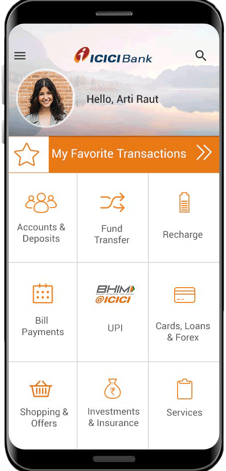
No account balance. Profile and “My Favorite Transactions” take the top. The grid is fixed, and a hamburger hides more actions.
Redesigned home
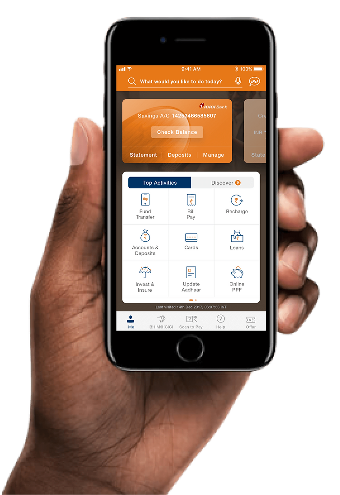
Savings first, amount behind Check Balance, then Top Activities, Discover, search, and Help. Dates on the frames, including December 2017, are sample interface data.
Balance never made the home screen
Balance checking was the most-used action in the desk research. On the old dashboard it was not there at all.
The screen spent itself on the wrong things
The profile area took 30 to 35 percent of the screen. “My Favorite Transactions,” which people did not use often, was given a prominence it did not need. A hamburger menu hid the actions.
Hard to find, hard to name
The app already held a lot, including UPI, loans, and card design. Important functions were not easy to find. Transaction narration was vague and inconsistent, so a line in history often did not say what it was.
03
Design decisions
Four moves, with the frames already in the case.
Balance within reach, still private
Balance checking was missing from the old home, and it was the action people used most. I put it up front, behind “tap to view balance,” so the number is one gesture away and is not sitting large on an open screen. A returning user can swipe to see the balance before signing in. Fingerprint and Face ID are how someone signs in.
The principle was confidence, not just completion. People have to trust that a money moment worked, so the balance sits behind a tap, and a fixed deposit is drawn so the money can be seen growing. One home frame hides the amount. The other shows it.
Amount behind Check Balance.
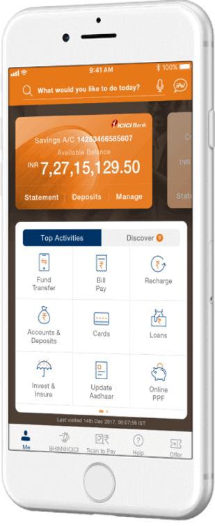
The same home, with the balance shown.
A home that follows the person
The old dashboard gave everyone the same grid. I personalized the home from activity. Top Activities holds the tasks they already repeat. Discover introduces tools they have not used: on these frames, an expense feed, an upcoming-transaction feed, and tips. The wireframes note that most people hold a single product, usually a savings account, so the layout leans on that relationship.
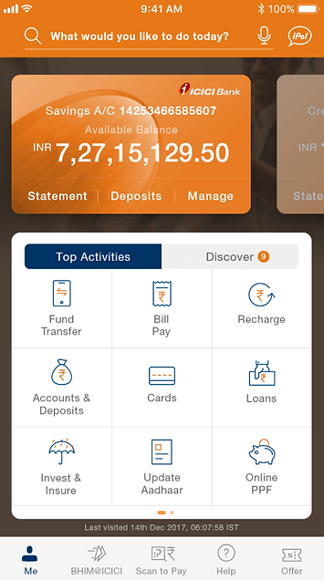
Top Activities, filled with frequent tasks.
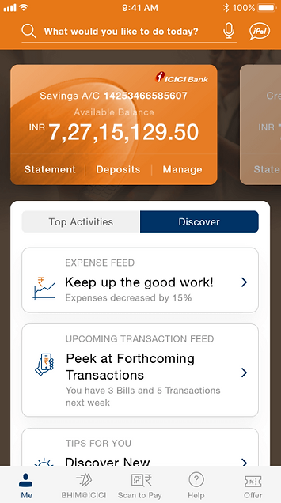
Discover: expense feed, upcoming transactions, and tips.
Show the shape of a month
People could move money and pay bills, and they could not see the shape of a month or set a limit. The spending overview puts income and spends on one bar, with an estimated budget from the past six months that can stand as a monthly limit. Months can be compared, including a custom period.
I broke expenses into categories and marked a category when it crossed its budget. Clearer narration sits with that view, so a person can believe the category. Amounts on these frames are sample interface data.
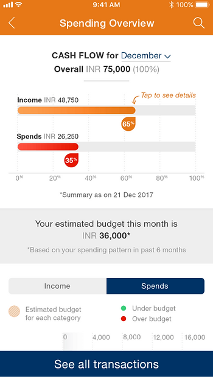
Income against spends, and a budget from the past six months.
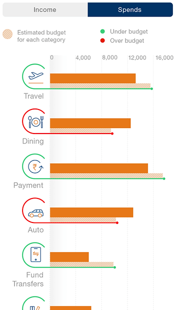
Red marks a category past its budget.
Name the payment before it leaves, and after
An EMI, a bill, or rent was easy to notice only after it had left the account. I used the last few months of payments to show what recurs ahead of the date, with an amount and a due date, and a line that names the payment.
History was hard to read because narration was vague and inconsistent. I tagged transactions automatically and let the person change a tag or add one, and filter in more than one way. If the bank’s description is unclear, the tag is how they name the line.
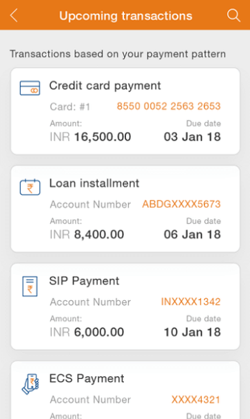
What the pattern says is coming, with a due date.
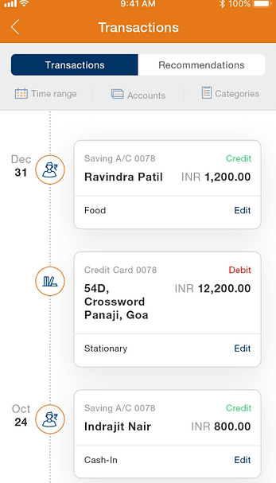
A dated list, a category on each line, and Edit when the tag is wrong.
04
Research at a glance
Method, audience, and the old app. Shares and the matrix open below.
Fifteen interviews
Eight ICICI customers and seven customers of other banks, plus the bank’s customer data. I asked how often people came to an app, where it hurt, and whether the most-used features could be found.
What they opened the app for
Top activities, longest bar first, with no count printed on the bars: balance checking, account statement, recent transactions, offers and promotions, bill payment. A quick Google search supplied the desk research. The case study does not cite each figure.
Competitors
No Indian bank app stood out to me as ideal in design, features, and usability, including HDFC and SBI. I also looked at Paytm and Google Pay. There is no scoring matrix. The gap was discoverability.
Tests
I tested phase by phase. I refined the wireframes with the design team and the business stakeholders before I designed the interface. Sessions used 8 to 10 internal people from various departments. The write-up does not list the tasks, the findings, or a success rate.
Personas in one line
Three portraits came from the fifteen interviews and the bank’s customer data. I added a fourth so a small-business owner is in the set.
Shivnay Agarwal, 39, data scientist. All accounts and bills in one place. Search, the account overview, and irrelevant content get in the way.
Athira Menon, 25, fashion designer. See the balance quickly and track spending, so more of it can go to travel.
Hiten Shah, 56, bank manager, retiring after 33 years. Help has to be easy to find, on an app that feels intuitive.
Kavita Deshmukh, 44, tiffin service owner, Nagpur. The fourth portrait, added so a small-business owner is in the set.
05
Learnings
What the case claims at the end, and the trade-off that kept coming back.
The end product was what I envisioned: a beautiful, functional banking app, one of its kind in India. It lets a person perform the primary tasks seamlessly, and it makes the less common features discoverable when they are needed.
Primary tasks are the balance, the statement, a transfer, a bill. Features that are not used every day can still be found, through search, Discover, and a services list that calls out what that person uses most.
Working on this project has taught me a lot about the design thinking process, the do’s and don’ts of mobile design (especially when it comes to iOS), and the importance of not getting married to an idea.
That lesson came in my first major UX role. On the wireframes, a shorter journey still had to leave room for discoverability and for the products the bank needed people to find. Holding both, rather than defending the first concept, is the decision I kept coming back to.
06
Full case
The current write-up, opened on demand. Enter or Space opens a heading.
My roleOriginal note
I took on the research and core UX design for this project. It was my first major role as a UX designer. The learning curve was steep, but adapting to the pace and scope of a large banking team was a valuable experience. Through in-depth research, user analysis, and iterative design, I aligned with expectations and delivered a user-centered solution. Once I adapted to the speed and scope, the process became smoother, and I could focus on creating an impactful, user-friendly design.
Research
I ran desk research, stakeholder interviews, and 15 user interviews. From that I built personas, a competitive look, and a heuristic review of the old dashboard.
Core UX
I designed the information architecture, wireframes, dashboard explorations, and the spending, upcoming-transaction, and history concepts. I prototyped in Figma, then refined the work with the team and the bank’s business stakeholders.
Design processFive passes and the diagram
DiscoverI did secondary research, defined the target audience, and ran stakeholder interviews and 15 user interviews. I reviewed the old dashboard and the problems in it.
DefineThree personas came from the interviews and the bank’s customer data. I compared competitors, then set four design objectives: frequent actions, findability, relevant content, and the phone’s own capabilities.
IdeateI shaped the information architecture, bringing in Expenditure Analysis, Upcoming Transactions, and Discover. I explored several dashboard directions and concepts for the pages that carry the product.
PrototypeI annotated wireframes for Login, Dashboard, Accounts, Expenditure Analysis, Fund Transfer, Bill Pay, Offers, and Help, and prototyped them in Figma.
Test & DeliverUser testing, stakeholder feedback, then refine and repeat. I refined wireframes with the design team and the business stakeholders before I designed the interface. Sessions used 8 to 10 internal people.
How I structured the work: Discover and Explore, Design, and Test and Evaluate. Full size
Problem and heuristic reviewBrief, 2008 screen, eight findings
ICICI Bank aimed to revamp its iMobile app for iOS, focusing on delivering an intuitive and delightful experience. My task was to design a comprehensive personal banking app that seamlessly integrates diverse functionalities while catering to a broad user base with varying financial needs. The challenge was to create a user-centric interface that balances simplicity, accessibility, and efficiency, ensuring the app remains both functional and engaging for a diverse audience.
ICICI Bank is India’s largest private bank, with a presence in 7+ countries. In 2008 it launched iMobile, described as India’s first mobile banking application. By the time of this project, iMobile served over 10 million users. The people I had to consider were wider than the app’s own users: the bank’s customers, across age groups, totaling over 62 million. Those are different groups.
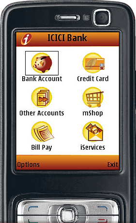
iMobile as it launched in 2008, on a feature phone: Bank Account, Credit Card, Other Accounts, mShop, Bill Pay, and iServices.
Forrester’s analysis, as I used it on this project, found that Indian banking apps performed poorly against international ones. No Indian app surpassed the global average of 65 out of 100. ICICI received the highest rating among the Indian apps, at 63 out of 100. Even with those shortcomings, ICICI remained the most popular app and was seen as one of the best among its competitors.
Some restrictions set by the Reserve Bank of India could not be changed, so I kept them outside the design space from the start.
Balance never made the home screen
Balance checking was the most-used action in the desk research. On the old dashboard it was not there at all.
The screen spent itself on the wrong things
The profile area took 30 to 35 percent of the screen. “My Favorite Transactions,” which people did not use often, was given a prominence it did not need. A hamburger menu hid the actions.
Hard to find, hard to name
The app already held a lot, including UPI, loans, and card design. Important functions were not easy to find. Transaction narration was vague and inconsistent, so a line in history often did not say what it was.
The previous dashboard. No account balance is shown.
Heuristic review
I reviewed the old dashboard and found taps that were not needed, navigation that wound around, and forms that ran long. The processes were more complex than the task. I recommended less friction, clearer labels, and simpler workflows.
The layout was stagnant.
Notifications and account updates were not visible on the dashboard.
“My Favorite Transactions,” which people did not use often, was given a prominence it did not need.
The grid showed many services, not ordered by what that person actually did.
The profile area took 30 to 35 percent of the screen.
Balance checking, the most-used action, was not on the dashboard at all.
A hamburger menu hid the actions.
There was no place to discover a new feature, and no personalized suggestion.
StakeholdersWho was in the work
Stakeholder
What they need
How I worked with them
ICICI Bank business teams
An iOS revamp of iMobile that is intuitive and still complete for a broad customer base with unlike financial needs.
I interviewed stakeholders on how the app worked, where it was limited, and which issues were already known. Their feedback sat inside the test-and-evaluate loop, before I treated the interface as final.
Priyanka Kane, PM
The 11-month revamp aligned with expectations.
Priyanka was PM on the team. I aligned the work with expectations through research, user analysis, and iterative design.
Salma Shaik
A shared design effort around the research and the core UX.
Salma is on the team with me. We refined the wireframes together, with the business stakeholders.
Reserve Bank of India
Rules that the product is not free to redraw.
Some RBI restrictions could not be changed. I kept them outside the design space from the start, rather than treating them as a screen to redesign.
Internal departments
Flows that held up when someone from outside the design team tried them.
Quick, in-the-moment sessions with 8 to 10 internal people from various departments.
End usersApp users and bank customers
iMobile users
Over 10 million people already on the app. Desk research ranked what they open it for, longest first: balance checking, account statement, recent transactions, offers and promotions, then bill payment.
ICICI Bank customers
Over 62 million customers, across age groups. This is the wider group I had to consider, not a second count of app users. Their financial lives do not look alike: several accounts and family bills, a first salary and a trip to save for, a retirement that should be quiet, or a small business paying suppliers from the same phone.
Customers of other banks
Seven of the 15 interviews were with customers of other banks, alongside eight ICICI customers. I asked how often people came to an app, where it hurt, and whether the most-used features could be found.
Mobile already carried ordinary banking. People used it to look at a balance, scan recent transactions, pay a bill, or move money. The same complaint shows up more than once later in the work: if the description of a transaction is vague, the person cannot tell what the line actually was.
Research methods and figuresMethods, shares, top activities
Desk research
Secondary research
A quick Google search supplied the figures below, and the ranking of top activities. Balance checking is the longest bar.
Interviews
Fifteen user interviews
Eight ICICI customers and seven customers of other banks. I asked how often people came to the app, where it hurt, and whether the most-used features could be found.
Stakeholders
Stakeholder interviews
I asked how the app worked, where it was limited, and which issues were already known. Some Reserve Bank of India restrictions were fixed, and I left them outside the design space. The bank’s customer data also fed the personas.
Heuristics
Heuristic evaluation
I reviewed the old dashboard: extra taps, winding navigation, long forms. Eight findings are listed in Problem, beside that screen. I recommended less friction, more clarity, and simpler workflows.
Competitive
Competitor review
I compared HDFC and SBI as direct competitors, and Paytm and Google Pay as payments apps people already used. I did not build a scoring matrix.
Testing
Phase-by-phase sessions
I refined wireframes with the design team and with the business stakeholders before I designed the interface. User sessions were quick and in the moment: 8 to 10 internal people, from various departments.
Finding
Share
Used a mobile device to view a balance, view recent transactions, pay bills, transfer funds, or do other banking
60%
Purchase with a mobile app
73%
Want to receive personal offers
44%
Wanted an alert if their credit card was up for renewal
49%
Transferred funds between accounts
44%
Paid a bill from their bank account
47%
Reported using their bank’s mobile app
64%
Wanted an alert about a problematic or fraudulent transaction
58%
What the desk research turned up about how people were already banking on a phone.
Top activities, longest bar first
Balance checking
Account statement
Recent transactions
Offers and promotions
Bill payment
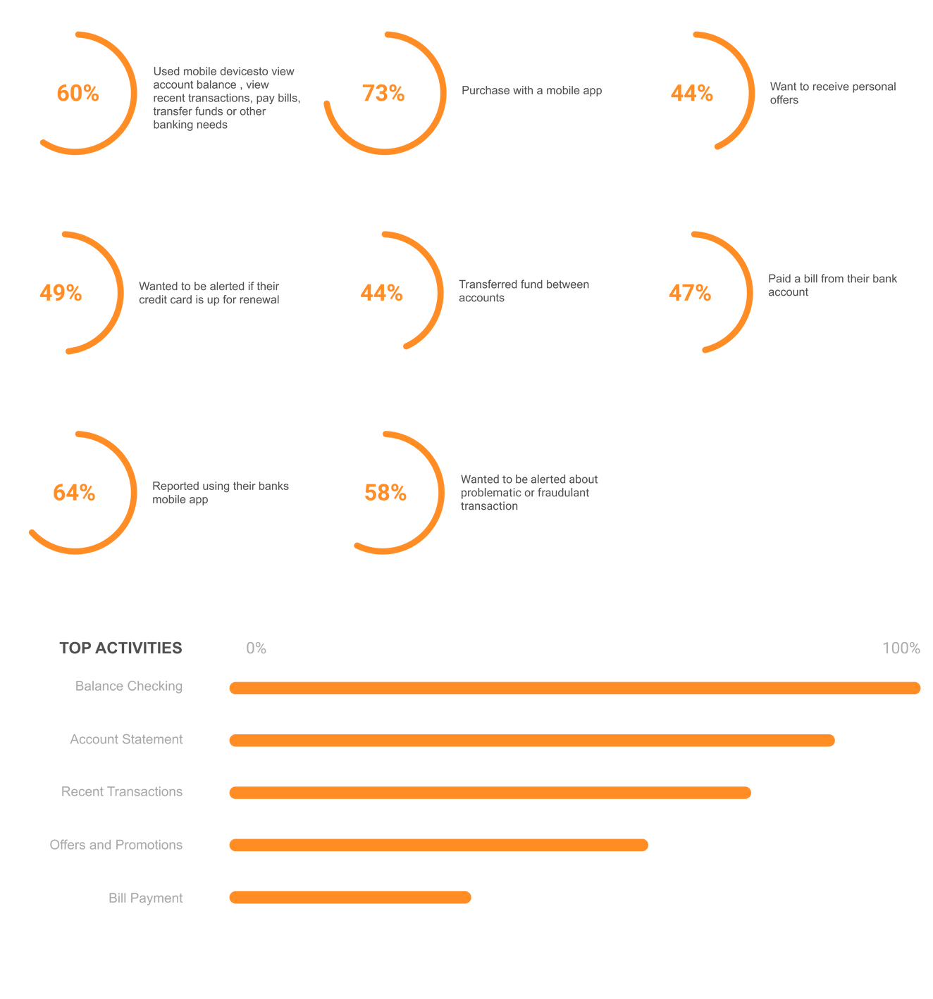
Desk-research graphic stored with the case. The write-up says a quick Google search supplied the figures and does not cite each one. Top activities, longest bar first, with no count printed on the bars, are listed above.
Competitive analysisMatrix and the screen files
iMobile already held a lot, including UPI payments, loan applications, and card design. The gap was discoverability. Important functions were not easy to find, so I worked to make them easier to reach.
Each note comes from the home or the screen I reviewed. Where a screen did not show a capability, I left it as not shown rather than guessing.
Yes part of the product
Partial a limited version
No not part of the product
Not shown not on the screen I reviewed
Scroll the table sideways. The Capability column stays put.
Capability
iMobile
SBI Anywhere
HDFC Bank
Paytm
Google Pay
Place in the set
The product
Direct competitor
Direct competitor
Indirect competitor
Indirect competitor
UPI payments
Yes In the services set, and on the old grid.
Yes UPI sits on the home grid.
Yes Pay, Collect, and a UPI registration step.
Yes UPI on the home, with a cashback offer.
Yes Pay a person. The screen was still branded Tez.
QR scan and pay
No Not on the home grid I reviewed.
No Not on the home grid.
Not shown Not on the UPI screen I reviewed.
Not shown Not on the home I reviewed.
Not shown Not on the screen I reviewed.
Biometric login
No Not on the old dashboard. I added Touch ID and Face ID in the redesign.
Not shown Not on the home I reviewed.
Not shown Not on the screen I reviewed.
Not shown Not on the home I reviewed.
Not shown Not on the screen I reviewed.
Voice or Siri support
Partial Search was on the old header. Voice input and Siri search came with the redesign.
Not shown Not on the home I reviewed.
Not shown Not on the screen I reviewed.
Not shown Not on the home I reviewed.
Not shown Not on the screen I reviewed.
In-app search
Yes Search sat on the old header, while many actions stayed in the hamburger.
Not shown Not on the home grid.
Not shown Not on the UPI screen.
Not shown Not on the home I reviewed.
Not shown Not on the screen I reviewed.
Bill pay and recharge
Yes Bill Payments and Recharge are both in the grid.
Yes Top Up and Recharge, and Bill Payments.
Not shown Not on the UPI screen I reviewed.
Yes Billers such as mobile, DTH, electricity, and petrol.
Not shown The screen is for paying a person.
Account and card management
Yes Accounts, cards, loans, and forex. Balance was still missing from home.
Yes My Accounts, with deposits and transfers beside it.
Partial Balance enquiry, add account, and history, on a UPI-led screen.
Partial Passbook and add money, not the full account relationship.
No A payments home, not accounts and cards.
Investments
Yes Investments and Insurance, easy to miss in the grid.
Partial e-Deposits on the home grid, not a wider portfolio.
Not shown Not on the screen I reviewed.
Partial Gold sits among the billers, not a portfolio.
No Not part of this payments home.
Personalization of the home screen
No A fixed grid, not ordered by the person. Favorite transactions took space people rarely used.
No A fixed 3 by 3 under a welcome header.
No A fixed list of UPI actions.
No A fixed payments home.
No A fixed grid of people.
Navigation depth to common tasks
Deep. A hamburger hid actions, balance was not on the home screen, and the profile area took 30 to 35 percent of the screen.
Shallower for the nine home actions. Usability still did not stand out.
UPI tasks are up front. Wider banking is not on this screen.
Shallow for pay and bills. Not built to hold the full bank relationship.
Shallow for paying someone.
Screens stored with the case
The table above is the comparison on the current page. These are the screen files in the project. Walnut Prime is included because the file is in the project. The table does not name Walnut. The two Walnut files are the same image.
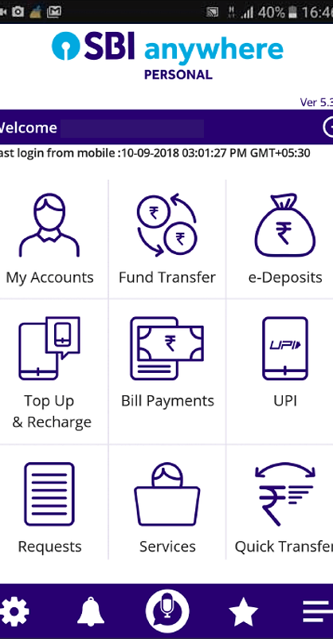
SBI Anywhere Personal.
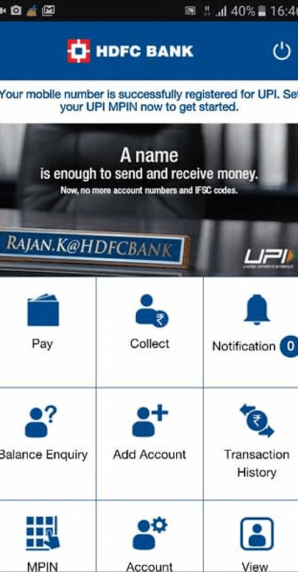
HDFC Bank, UPI registration and actions.
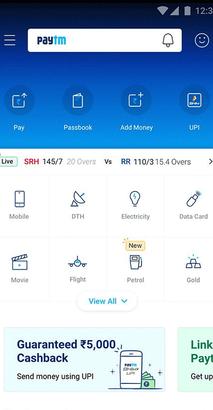
Paytm home.
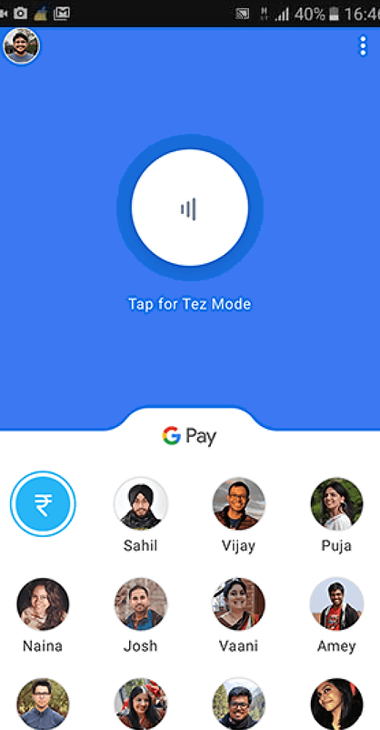
Google Pay. The screen still says Tez Mode.
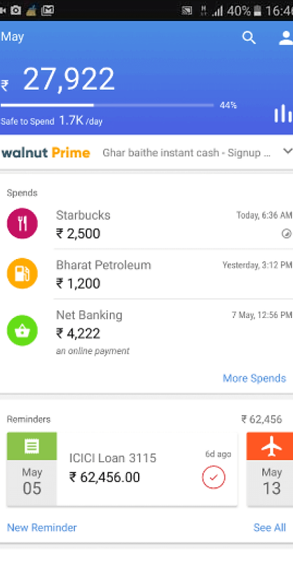
Walnut Prime. The second Walnut file in the project is the same image.
User personasFour written cards, three images
SA
Shivnay Agarwal
39 · Data scientist India
“I like to stay up to date, be it new technology or bill payments.”
Responsible, practical, disciplined, and cautious. Married, with two kids, several accounts, investments, credit-card bills, and family expenses. He wants to know where every rupee goes.
Goals
Instantly access all account details
Keep track of bills and pay them on time
Frustrations
Hard to search for a transaction
No easy overview of all accounts
Irrelevant content
Preferences out of five: Speed 3 · Features 4 · Help 3 · Discover 3
Several accountsFamily billsTracks every rupeePractical
AM
Athira Menon
25 · Fashion designer India
“I want more control over my expenses and want to save more to spend on travel.”
Carefree, no dependents, tech-savvy, and confident. Athira recently moved cities. Her parents live abroad, and saving for a trip to France sits alongside spending on dining out.
Goals
Track expenses
Save more to travel
Quickly view funds and do day-to-day transfers
Frustrations
Cannot quickly view her balance
No way to track expenses
The app is not aesthetically pleasing
Preferences out of five: Speed 5 · Features 3 · Help 1 · Discover 3. Help is the last thing Athira is asking for.
Tech-savvyWants the balance fastSaving to travelRarely needs help
HS
Hiten Shah
56 · Bank manager India
“I’ve seen enough and more of life. Looking for some peace and quiet after retirement.”
Content, not tech-savvy, jolly, and weary. Retiring after 33 years. He wants one place for his banking, with time left for gardening, cricket, and his granddaughter.
Goals
Retire financially secure
Lead a hassle-free life
Frustrations
Help is not easy to find
Not aware of investment opportunities
The app is not intuitive
Preferences out of five: Speed 2 · Features 2 · Help 5 · Discover 4
Not tech-savvyHelp must be obviousOne place for bankingQuiet retirement
KD
Kavita Deshmukh
44 · Tiffin service owner Nagpur
“I pay suppliers and take customer payments all day. Those jobs have to be on the first screen.”
Runs a tiffin service and a household budget from the same phone. Comfortable with UPI and bill pay, and still cautious with anything that looks unfamiliar.
Goals
Pay suppliers from the current account without a long hunt
See today’s credits and household savings in one place
Recharge and pay shop bills as fast as a personal UPI
Frustrations
Business and household lines look the same in history
The home grid gives equal space to products Kavita never opens
A vague description does not say which supplier was paid
UPI dailyCurrent and savingsMorning balance checkPractical, not exploratory
Scroll sideways. Four personas sit in this row.
Persona cards stored with the case
Three card images are in the project files: Shivnay Agarwal, Athira Menon, and Hiten Shah. Hiten’s card reads “peace and quite.” The written card above says “peace and quiet.” There is no card image for Kavita Deshmukh.
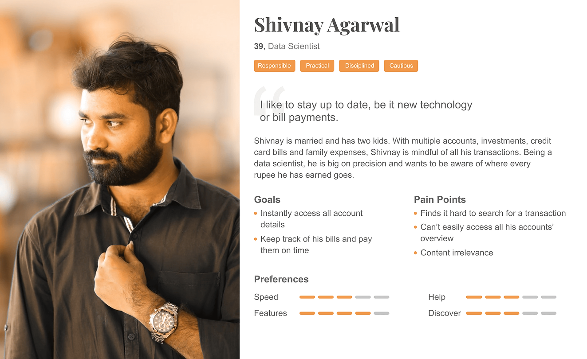
Shivnay Agarwal, as printed on the card.
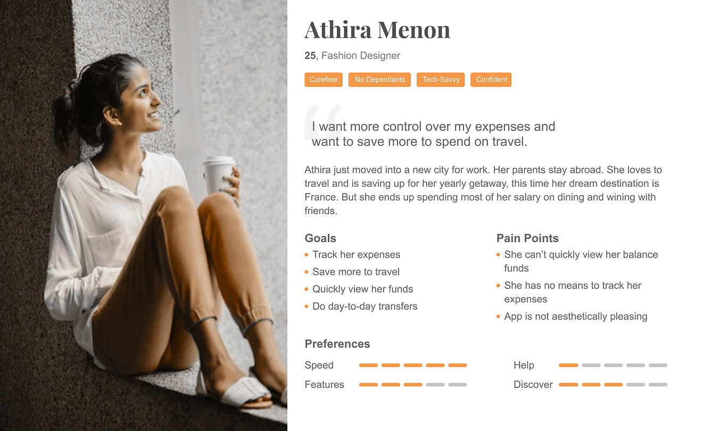
Athira Menon, as printed on the card.
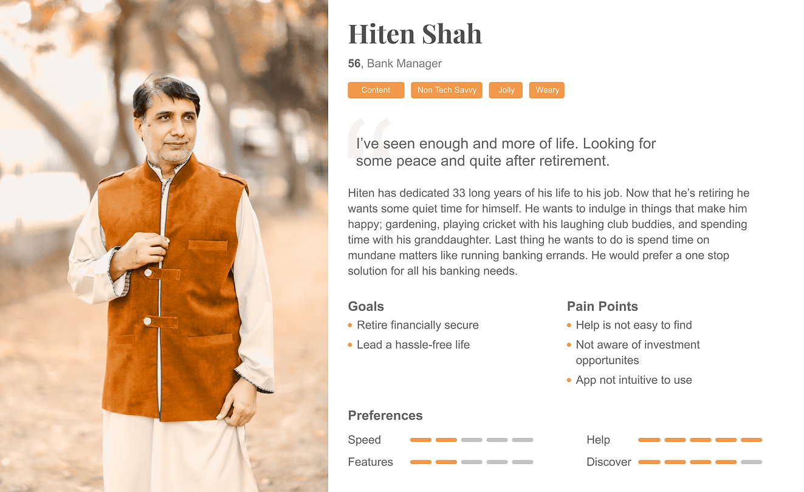
Hiten Shah. The card says “quite.”
Design objectives and the other decisionsPrinciple, objectives, annotated notes
Design principle
Design for confidence, not just completion.
In a banking app, finishing a task is not enough. People have to trust that it worked. Every money moment is designed to reassure: a clear confirmation, a status you can always see, and security cues where money moves, so customers feel confident and secure each time they use iMobile.
That is why the balance sits behind “tap to view balance,” sign-in uses fingerprint or Face ID, service requests carry a status strip, and a fixed deposit shows the money growing.
Quick access
I put frequently performed actions within quick reach. Balance checking belongs up front. Top Activities is filled from what that person does most often.
Discoverability
I made less common features quick to find. Discover introduces banking tools and services the person has not used.
Relevant content
I show content that is relevant to that person. The layout leans on the primary savings relationship. Research noted in the wireframes suggests most people hold a single product, usually a savings account.
Use the phone
I used what the phone already offers. Search accepts voice input. Login can be fingerprint or Face ID.
Four objectives: quick access, discoverability, relevant content, and using the phone. Full size
Some concepts made the journey simpler and, in doing that, worked against the business goals of feature discoverability and cross-selling financial products. A screen that only serves the task hides the rest of the bank. A screen that only promotes products makes the task longer. I made that trade on the wireframes, page by page.
Before login
I let notifications be reached without logging in, and a returning user can see the balance with a swipe, still without a session. Actions that do not need a login have a place. Fingerprint and Face ID are how someone signs in.
Balance, search, and help
I put the account balance up front, behind “tap to view balance,” for privacy. Not everyone wants that number large on an open screen. Search is visible, typed or spoken, because of how many features ICICI has. Help stays within reach. I favored the primary savings relationship over a menu of every product.
Discover
I split Discover into five parts: an upcoming-transaction feed predicted from the credit cycle and usage, service requests such as a new ATM card or a cheque book, a spending overview, offers, and tips. Tips are also a place to cross-sell, a credit card for example, without a separate detour. On the home screen, Discover sits beside Top Activities.
Clearer narration
Transaction narration was vague and inconsistent, so people could not tell what a line in their history actually was. I carried clearer narration through the spending views, the upcoming list, and the history itself. If the bank’s description is unclear, the tag is the person’s way to name it.
Money in and money out
I built upcoming transactions from the last few months of payments. The spending overview is the month’s credits and debits, with earlier months, a custom period, and a swipe into categories. Service requests show what is open or recently closed, with a status strip and a tap for the detail.
Accounts
I gave new and returning customers different landings, with a help icon and persuasive messages in place of a static block. Several savings accounts are a swipe apart. Account details can be shared, and the person chooses which details. Transactions filter by type, mode, time, amount, cheque, and history up to three years. A bill or a transfer can start from the account. Transactions can be bookmarked, the category edited, and the communication address updated from home. Dates are clearly separated.
Fixed deposits
I drew the deposit so the money can be seen growing, meant to reassure and to lower withdrawal. FD advice sits with the account, and applying for another deposit includes an explanation of the benefits.
Bills and feedback
I made upcoming bills visible together. Categories follow how often that person pays them. Auto Pay is offered, and a biller can be added, edited, or removed. Feedback is a single tap. I used emoji rather than a scale from 1 to 10, and leftover questions can be answered now or later.
Services, offers, and cards
I highlighted what is used most in the services list, and the list can be searched. Offers that are already approved for that person sit on the first fold, in clear categories. Some are contextual to place and time, with distance shown, and the category can change without scrolling back to the top. A voucher’s amount and quantity are set in one gesture, and a coupon code copies on tap. For an Expressions card, the person picks a category and a design, sees it large, and swipes to the next design.
A home screen with three jobs
The dashboard is the gateway. I needed it to show the accounts a person holds, open a way into more features and products, and still put the actions they already repeat within reach. A further band of analytics, suggestions, and tips is there so the bank feels as if it has been paying attention.
Prototype, architecture, and wireframesMap, board, explorations, tests
Information architecture
I created the information architecture and then refined it: unnecessary states came out, pages moved, and three areas came in — Expenditure Analysis, Upcoming Transactions, and Discover. Frequently used services sit first. Less common features stay quick to find. I streamlined adding and managing products: lines of credit, insurance, debit cards, and investments. I also looked for moments to engage someone without interrupting them, a conversational prompt that does not break the task they came to do.
The information architecture. It is a wide map. Full size
Wireframes
I drew several concepts for the pages that carry the product: Login, Dashboard, Accounts, Expenditure Analysis, Fund Transfer, Bill Pay, Offers, and Help.
The file is a single, very tall annotated board covering pre-login through offers and card design.
Dashboard exploration
I tried several home screens. Some savings cards show a Check Balance control and others show the amount already revealed. Variations include quick actions such as IMPS, pay bill, and UPI transfer; a regular-actions list; an updates feed; a Quick Actions and Discover split; and mixes of scan-and-pay, bill pay, and product prompts such as mutual funds and movie tickets.
Dashboard directions I explored before the interface was settled. Full size
Five changes on the path people already take
Personalized from the get-go
The old dashboard gave everyone the same grid. Favorite transactions, which people rarely used, sat in a prominent strip, and balance checking, the most-used action, was missing.
I personalized the home screen from activity. Top Activities holds the tasks they already repeat. Discover introduces tools they have not used: on these frames, an expense feed, an upcoming-transaction feed, and tips.
Frequent work stays immediate, and the rest of the bank stays one tab away instead of hidden in a hamburger menu.
Top Activities, filled with frequent tasks.Discover: an expense feed, upcoming transactions, and tips.
Budgeting and comparisons
People could move money and pay bills, but they could not see the shape of a month or set a limit.
I designed a spending overview that puts income and spends on one bar, with an estimated budget drawn from the past six months, and a place to treat that figure as a monthly spending limit. Months can be compared, including a custom period.
The view sits with everyday banking so tracking spending is not a separate product someone has to go and find.
Income against spends, and a budget estimated from the past six months.
Expenditure analysis
A month total still does not say which kind of spend ran over. If a transaction description is vague, the category is only a guess, so the breakdown cannot be trusted.
I broke expenses into categories and marked a category when it crossed its budget, so the overspend is visible on the bar. I treated a clearer narration pattern as part of the same decision, so a person can believe the category.
The bars are there to show where the month went, on the path someone already uses to look at spending.
Category bars against the estimated budget. Red marks a category that has run past it.
Upcoming transactions
An EMI, a bill, or rent was easy to notice only after it had left the account. A warning only helps if the person can tell what it is for, which the old narration often failed to do.
I used the last few months of payments to spot what recurs and to show it ahead of the date, with an amount and a due date on each item. The same clearer narration had to hold here, so the line names the payment.
Saying so before the date gives time to act, without sending someone to a new place to look.
What the pattern says is coming, with a due date on each line.
Transaction history
History was hard to read because narration was vague and inconsistent. A line often did not say what the payment was, so people could not search or filter with any confidence.
I tagged transactions automatically and let the person change a tag or add one, with filter and sort in more than one way. If the bank’s description is unclear, the tag is their way to name the line.
Dates stay clearly separated so a scan of the list is enough.
A dated list, a category on each line, and Edit when the tag is wrong.
Test, evaluate, repeat
I tested phase by phase. I refined the wireframes with feedback from the design team and from the business stakeholders, before I designed the interface.
The user sessions were quick and in the moment: 8 to 10 internal people, from various departments.
Final designLogin through upcoming transactions
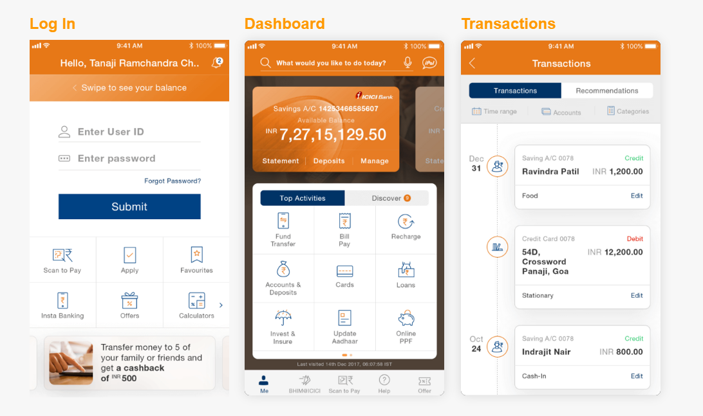
Log in, dashboard, transactions. The login screen includes “Swipe to see your balance,” matching the pre-login note in the wireframes.
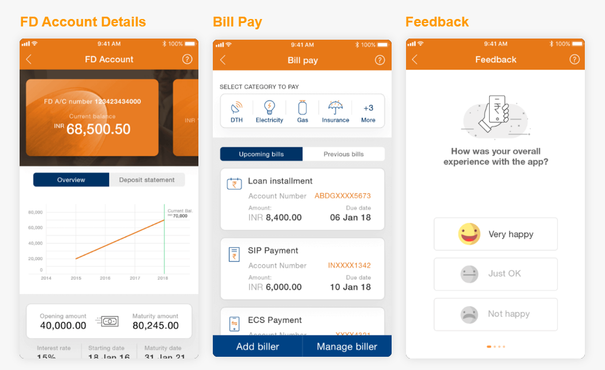
Fixed deposit, bill pay, feedback. The deposit chart is the “see your money growing” idea. Feedback is three faces, not a 1-to-10 scale.
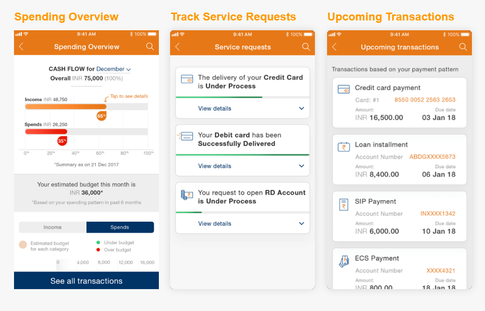
Spending, service requests, upcoming transactions. Each request has a status and a way into the detail.
Home, with the balance hidden behind Check Balance. Full sizeHome, with the balance shown. Top Activities is selected over Discover.
Other frames stored with the case
These frames are in the project files. Amounts and dates on them are sample interface data.
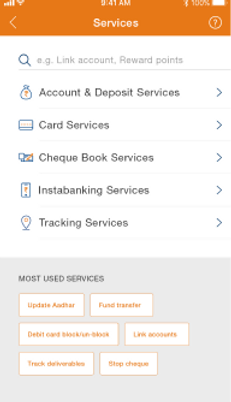
Services, with a most-used row.
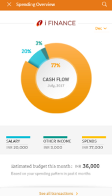
iFinance spending overview, July 2017 on the frame.
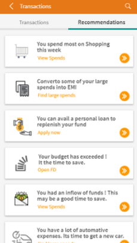
Recommendations tab on Transactions.
Outcome, as writtenClosing statement and the lesson
The end product was what I envisioned: a beautiful, functional banking app, one of its kind in India. It lets a person perform the primary tasks seamlessly, and it makes the less common features discoverable when they are needed.
What the app had to do
Primary tasks are seamless: the balance, the statement, a transfer, a bill. Features that are not used every day can still be found, through search, Discover, and a services list that calls out what that person uses most.
What I learned
Working on this project has taught me a lot about the design thinking process, the do’s and don’ts of mobile design (especially when it comes to iOS), and the importance of not getting married to an idea.
That lesson came in my first major UX role. The learning curve was steep. Once the speed and the scope were familiar, I could settle on a design that was user-centered and user-friendly.
The wireframe trade-off is the same lesson in practice. A journey that was ideal for the user still had to make room for discoverability and for the products the bank needed people to find. Holding both, rather than defending the first concept, is the decision I kept coming back to.
Metrics, as writtenOriginal labels kept
Copied from the current case study, with the labels that page already uses. The three results do not state a baseline, a timeframe, or a source. The preview leaves them in this section.
15%
Increase in conversion rates after the redesign.
Result
20%
Improvement in customer engagement.
Result
30%
Reduction in drop-off rates.
Result
63
ICICI’s score out of 100. Highest among the Indian apps in the Forrester analysis I used on this project.
Measured
65
The global average in that analysis. No Indian banking app in it scored above this.
Measured
62M+
ICICI Bank customers, across age groups. The wider group the redesign had to consider.
Measured
7+
Countries in ICICI Bank’s presence
Measured
15
User interviews: eight ICICI customers and seven customers of other banks.
Measured
8–10
Internal people, from various departments, in the quick user sessions.

![Eight mobile dashboard explorations in a grid. Variations include a savings balance card with quick actions such as IMPS, pay bill, and UPI transfer; a quick-actions list with regular actions like recharge and rent; an updates feed about a loan installment and pending bills; a Quick Actions and Discover split; a yellow account card over offers; an account summary listing savings, loan, and credit card; and mixes of scan-and-pay, bill pay, and product prompts such as mutual funds and movie tickets.](../41-dashboard-exploration.webp)